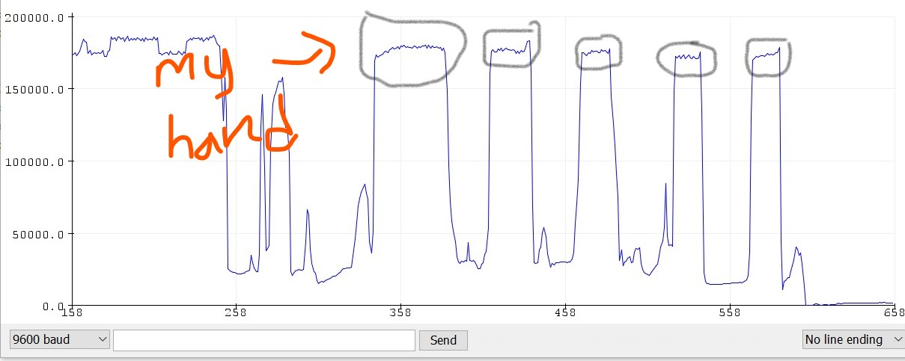
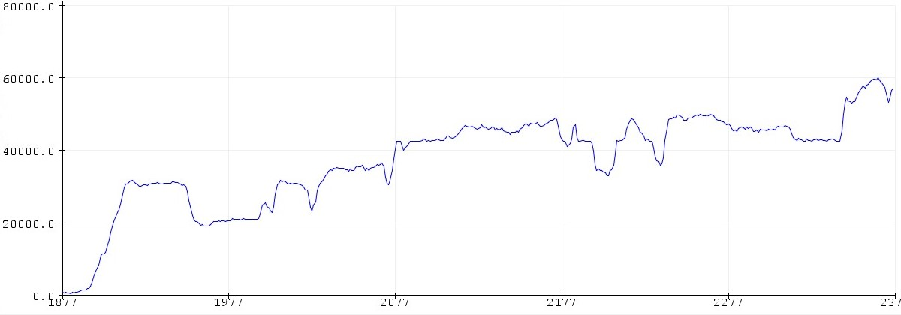
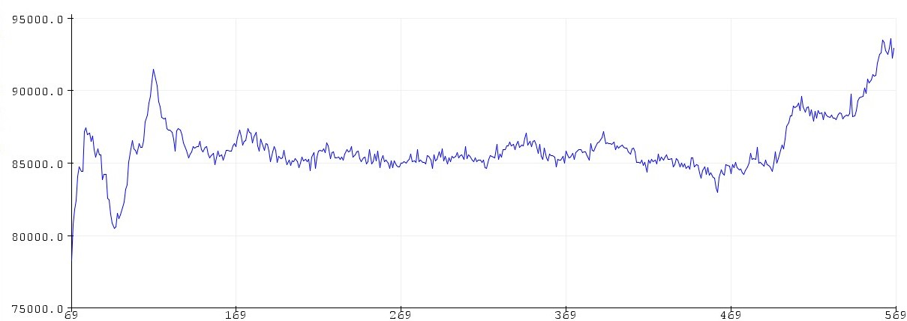
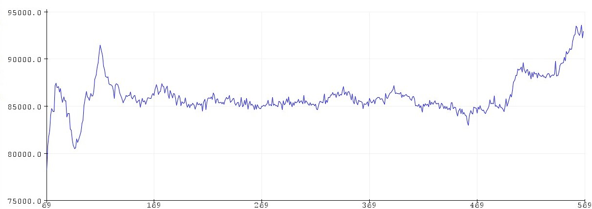

Day 7: Electronic Input Devices
For this assignment, I first tested different objects to see what I get on my serial plotter. For my results, I got all different types of graphs.
Below is my result from the class session.

My first attempt for the actual assignment was with my phone flashlight. Below I provided the graph and an image of what I was doing with my phone flashlight. The up and down lines represent when the sensor recognized the light.

My second attempt was with banana. Because the banana was placed on the sensor the whole time, the result on the graph was only up and down curve.
 

My last attempt was monitoring when the LED lights up with the touch sensor. The LED light only light up when I touch the sensor with my hand or with any other object. Below I provided an image of LED lighting up and the code.

Here is the code:
#include
CapacitiveSensor Sensor = CapacitiveSensor(7,5); //7 is charge pin. 5 is sense pin.
long val;
int pos;
#define led A0
void setup()
{
Serial.begin(9600);
pinMode(led, OUTPUT);
}
void loop()
{
val = Sensor.capacitiveSensor(30);
Serial.println(val);
if (val >= 1000 && pos == 0)
{
digitalWrite(led, HIGH);
pos = 1;
delay(500);
}
else if (val >= 1000 && pos == 1)
{
digitalWrite(led, LOW);
pos = 0;
delay(500);
}
delay(10);
}